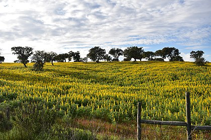

Turismo em Alantejo
|
O Alentejo é uma região portuguesa situada no sudeste do país. Tem uma área de 27 330 km2[4] e registou em 2023 uma população de 474 701 habitantes[5] com uma densidade populacional de 17 habitantes por km2, sendo a sétima região mais populosa de Portugal e a região mais extensa do país. A capital da região situa-se na cidade de Évora, aonde fica localizada a Comissão de Coordenação e Desenvolvimento Regional do Alentejo, o órgão descentralizado regional da administração pública, sendo responsável por coordenar e executar políticas de desenvolvimento regional, planificação territorial, ordenamento do território e ambiente[6]. |
imagem cidade 1  |
| Vídeo de Apresentação da cidade de Alantejo | Mapa da cidade de alantejo |